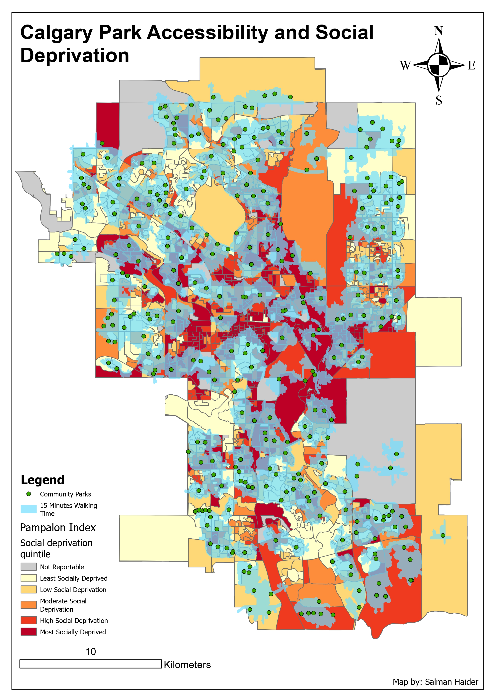
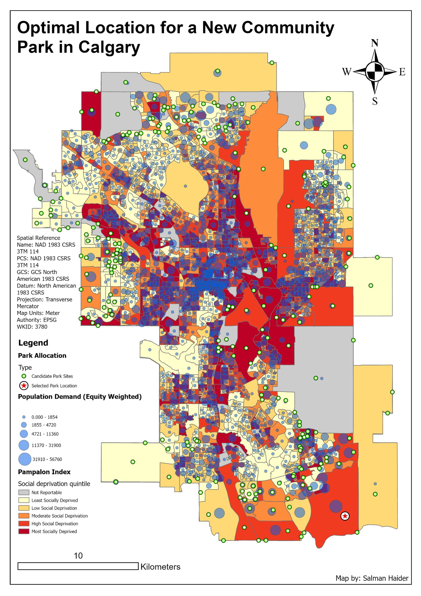

Map 01
View full map →Park accessibility and social deprivation

I created this map series to examine park accessibility in Calgary and explore where a new community park could be located. The analysis combines 15-minute walking service areas, community park locations, Pampalon social deprivation data, service gaps, and an equity-weighted Location-Allocation model.


The purpose of this project was to assess whether Calgary residents have walkable access to community parks and to identify where a new park could help improve access. I focused on park accessibility not only as a distance problem, but also as an equity question, because access to greenspace is connected to health, wellbeing, and urban quality of life.
The first map shows existing community parks, 15-minute walking service areas, and social deprivation patterns. The second map uses Location-Allocation analysis to test where one new park could be placed based on candidate sites and equity-weighted population demand.
The project used Calgary community park locations, the City of Calgary boundary, Calgary developing areas, and the Pampalon Deprivation Index. The Pampalon layer was important because it helped show social deprivation patterns across the city and allowed the analysis to consider social vulnerability instead of only population count.
I used the community parks as service area facilities, the Pampalon geography as the social and population layer, and developing areas as possible candidate locations for a new community park.
I used ArcGIS Pro Network Analyst to create 15-minute walking service areas around Calgary community parks. This showed which parts of the city were within a reasonable walking distance of a park. I then used an Erase workflow to identify service gap areas, which are the places outside the 15-minute walking service areas.
I overlaid these park access patterns with the Pampalon social deprivation quintiles. This made it possible to see whether areas with higher social vulnerability also had weaker park access.
The first map shows community parks as green points and 15-minute walking areas as light blue polygons. Behind those layers, the Pampalon social deprivation quintiles are shown from least deprived to most deprived. This makes it easier to compare park access with social vulnerability across Calgary.
The pattern suggests that many areas have some level of park coverage, but service gaps still exist. Some gap areas overlap with moderate, high, and most socially deprived communities. This means some socially vulnerable areas may have reduced access to nearby parks compared with other parts of the city.
For the second map, I used Location-Allocation analysis to identify one possible new community park location. Candidate sites were created by intersecting Calgary developing areas with park service gap areas. I then converted candidate polygons to points so they could be used as candidate facilities.
I also converted the Pampalon polygons into population centroid points for demand. To make the analysis more equity-focused, I calculated an Equity Weight field by multiplying 2021 population by the social deprivation quintile. This gave more influence to places with both higher population and higher social vulnerability.
The second map shows candidate park sites, the selected park location, population demand points, and social deprivation quintiles. The selected site is shown as the final location chosen by the Location-Allocation tool based on the model parameters.
The tool selected a location inside a service gap, which makes sense from a network analysis perspective. However, I also inspected the area using a basemap and noticed that the selected site appeared to be in a developing area with limited dense residential population nearby. This means the result is useful, but it should not be accepted without further planning review.
I used Maximum Attendance as the Location-Allocation problem type because the goal was to serve the largest number of residents within walking distance. The impedance cutoff was set to 15 minutes of walking time, which matched the accessibility threshold used in the service area analysis. I located one facility because the task was to identify a single new potential park site.
The demand points were weighted using the Equity Weight field. This was important because selecting a park location based only on population might prioritize dense areas that are not necessarily the most socially vulnerable. The equity weighting gave more importance to areas with higher population and higher social deprivation.
The selected location should be treated as a model-based recommendation, not a final planning decision. The tool used network distance and weighted demand, but a real park planning decision would also need land ownership, parcel availability, future growth, residential density, development timing, environmental constraints, and community input.
Another limitation is the polygon-to-point conversion. Turning each area into a point makes the model easier to run, but it assumes demand is located at that single point. In reality, residents are spread across the polygon, so the centroid may not perfectly represent where people actually live.
This project helped me understand how accessibility analysis can support urban planning. Mapping 15-minute walking service areas was useful, but the more important step was comparing those service areas with social deprivation patterns. That made the analysis more meaningful because it connected park access to equity.
I also learned that GIS models need interpretation. A Location-Allocation tool can produce a technically valid result, but that result still needs to be checked against real-world planning context. The best map is not just the one that shows an output, but the one that helps explain how confident we should be in that output.